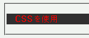
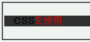

colorプロパティにtransparentを指定するのはCSSとして不正なので無視されるべきなのだが、WinIEは#000000が指定されているかのように振舞う。
<p style="background:#333333; color:red;"> <strong style="color:transparent;">CSS</strong>を使用</p>
CSSを使用
strong要素では前景色にtransparentを指定しましたが、これは無視されるので親要素での指定色が継承されるはずです。
Moz1.0での表示（標準モード）
WinIE6.0での表示（標準モード）
WinIE6.0では標準･互換モード共に color: #000000; が指定されたかのような状態になります。